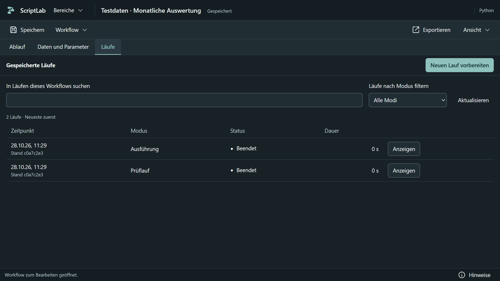
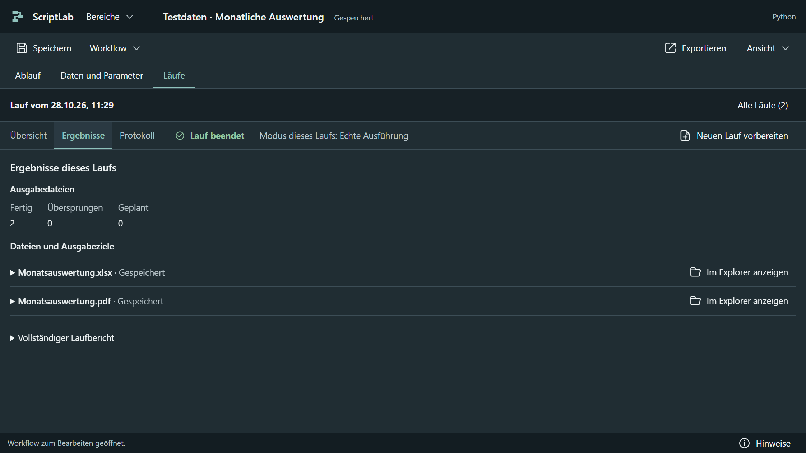
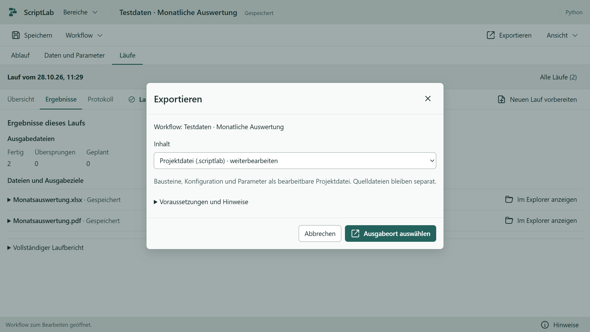

ScriptLab · Automatische Ablage und Läufe
Aktuelle Aufnahmen der Windows-Anwendung mit synthetischen Daten. Der Prüflauf und die Ausführung wurden
tatsächlich gestartet; die Laufdetails wurden nach einem Neustart wieder geöffnet.
Lauf vorbereiten
Der Arbeitsordner wird automatisch verwaltet. Modus und Parameter bleiben unmittelbar zugänglich.

Frühere Läufe finden

Zeitpunkt, Modus, tatsächlicher Status und Dauer; Details öffnen sich erst nach Auswahl.
Ergebnisse eines ausgewählten Laufs

Bestätigte Dateien lassen sich im Explorer anzeigen. Vollständige Pfade und Berichte bleiben gezielt
erreichbar.
Projektdatei exportieren

Nur beim Export wird ein Speicherort gewählt. Die interne Workflowdatei bleibt erhalten.